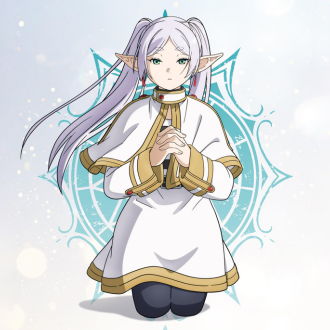
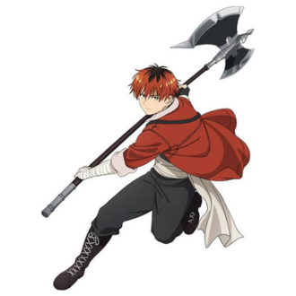
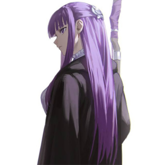
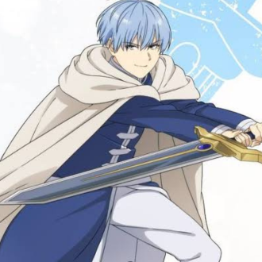
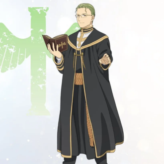
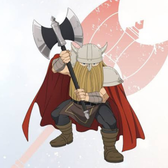

-
Frieren
Descrição
Frieren é uma elfa maga que foi membro do grupo que derrotou o Rei Demônio. Embora pareça ser muito jovem, ela nasceu em uma raça de elfos de longa vida e viveu por mais de mil anos. Ela prefere passar seus dias buscando e aprendendo feitiços raros.
-
Stark
Descrição
Stark se destaca como um guerreiro humano crucial para ajudar os personagens a enfrentarem os monstros e ameaças que surgem no caminho. O antigo guerreiro Eisen o acolheu como seu aprendiz no passado e o orientou a se juntar ao grupo de Frieren em sua aventura.
-
Fern
Descrição
Uma jovem maga poderosa e aprendiz de Frieren. Ela é uma órfã de guerra de um país do sul que perdeu os pais e estava prestes a cometer suicídio pulando de uma ravina quando Heiter a resgatou. Quando criança, ela começou a treinar magia sob a tutela de Heiter para se tornar mais autossuficiente. Mais tarde, ela conheceu Frieren, que visitou Heiter quando ela tinha nove anos de idade, e pediu que Frieren lhe ensinasse magia para que ela pudesse se tornar uma maga completa.
-
Himmel
Descrição
Ele era o herói do grupo e um homem autoproclamado bonito. Depois de verem uma chuva de meteoros juntos, ele e Frieren prometem se encontrar novamente. Ele morre logo após o reencontro, cinquenta anos depois, o que a leva a embarcar em uma nova jornada. Várias ocasiões em sua jornada mostraram que ele e Frieren tinham sentimentos um pelo outro, mas o senso de tempo de Frieren e a compreensão dos humanos na época deixaram seus sentimentos ambíguos.
-
Heiter
Descrição
um padre amante do álcool. Ele encontrou, adotou e criou Fern depois que o grupo foi dissolvido.
-
Eisen
Descrição
Um anão que, embora não tenha vida tão longa quanto os elfos, tem uma vida significativamente mais longa que os humanos. No entanto, apesar de sua longa vida, ele já passou do seu auge e envelheceu. Como resultado, ele recusa o convite de Frieren para embarcar em uma nova aventura, optando por passar os dias restantes em paz e recomendando que Stark a acompanhe.